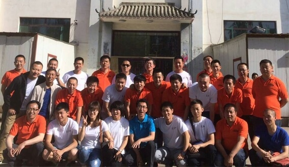
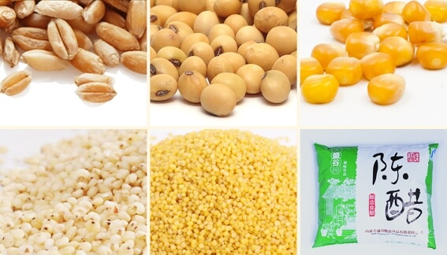
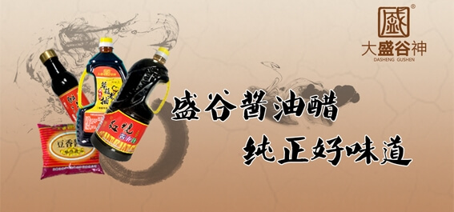

我公司是一家专业化生产调味品的股份制民营企业，位于呼和浩特市机场北辅路5公里处。公司注册资金300万元，总投资1500万元，其中固定资产投资1200万元，流动资金300万元。项目于2004年5月正式开工建设。同年年底建成投产，年产酱油、食醋、火锅料各1万吨，实现销售收入7200万元。目前生产经营正常，产品于2005年初投放市场后，深受欢迎，被誉为“百姓满意食品”，并先后两次被《中国食品报》以“醋香从草原上飘起来”标题进行了报道。企业现被呼市市委市政府认定为“农业产业化重点龙头企业”，被呼市劳动和社会保障局定为“再就业基地”，2007年被内蒙古自治区品牌协会授予“内蒙古著名商标”，2012年被呼市赛罕区人民政府授予“2011年度先进企业”，2012年被呼市消费者权益联合会授予“消费者信得过优秀单位”，2014年被内蒙古农牧业产业化龙头企业协会授予2014第二届内蒙古“名优特”农畜产品。
公司成立之初就本着“高起点、高标准、严要求”的指导思想进行基础建设和管理。选用先进的工艺和全不锈钢超高温瞬时灭菌器、全封闭自动负压灌装机等一系列先进的配套设备；严格按IS09001—2000质量管理体系要求进行质量管理，以确保产品的优质与稳定；并积极完善组织体系，现企业已具备自主研发、生产、销售整套系统，岗位员工达88人，其中大中专学历以上人员33名，专业工程技术人员21名，夯实了企业发展基础。
公司主导的产品“大盛谷神”牌酱油、醋，选用我区优质的小麦、大豆、玉米、高粱、谷子为原料，经42道工序80多天的酿造而成。100％纯粮酿造，完善的工艺过程，使得陈醋色泽棕红、酸味柔和、醇香回甜、久存不腐；酱油酱香、酯香浓郁悠长，味道鲜美醇厚，生产的调味汁产品选料精良、配方科学合理、色泽红润。产品经卫生防疫部门，质量技术监督部门全面检验完全符合国家标准，是广大消费者可放心的卫生、营养、健康的调味品，产品销售现已初步形成了以呼市为中心辐射全区的市场网络。
我公司以“百年盛谷”为目标，将不断树立和完善“大盛谷神”和“走西口”品牌形象，争做内蒙调味品第一品牌，中国调味品著名品牌。坚持以“品质为先、诚信为本”，以100％的纯粮酿造，让广大消费者享受到“营养、健康、安全、卫生”的酱油、食醋、调味汁及火锅料。